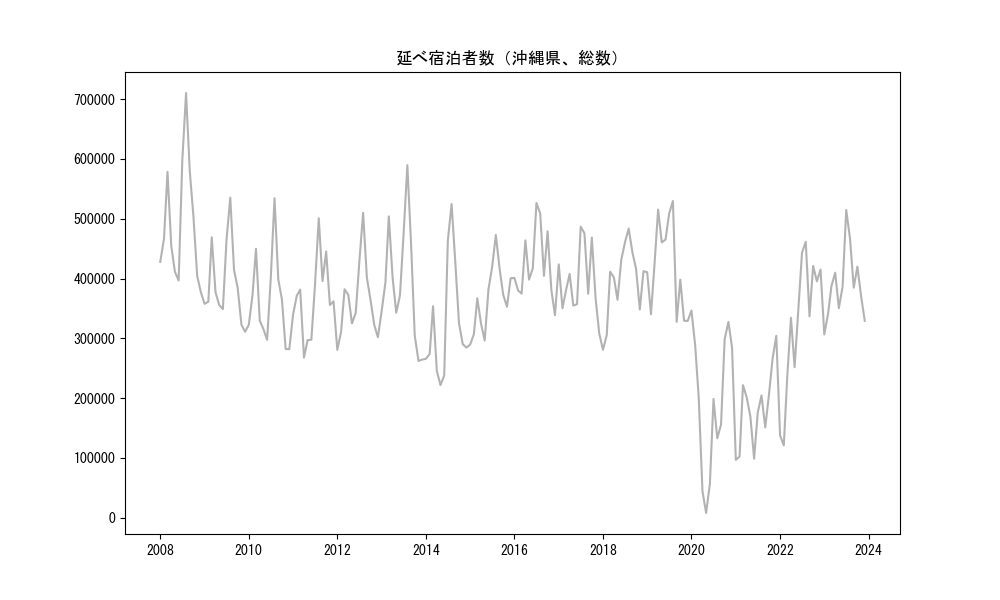
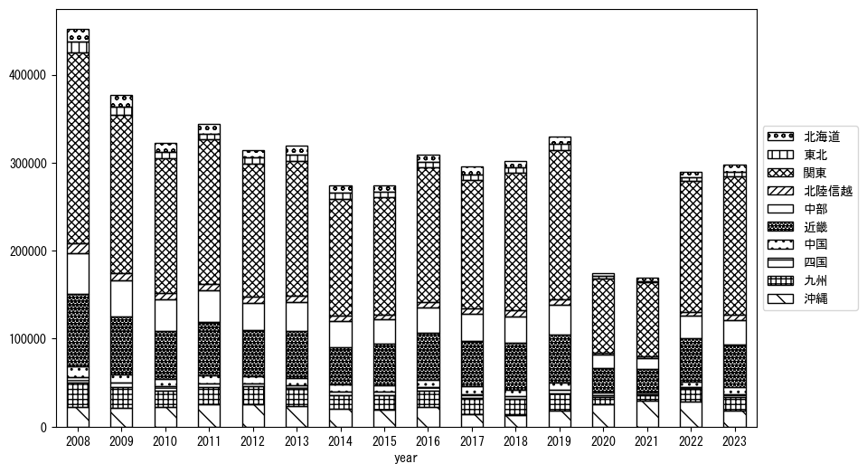
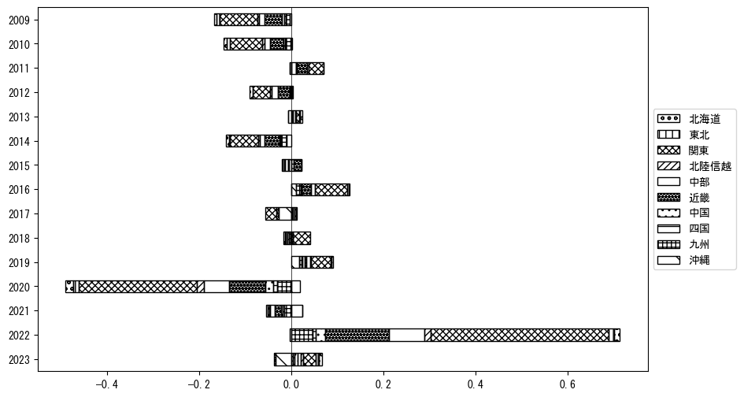
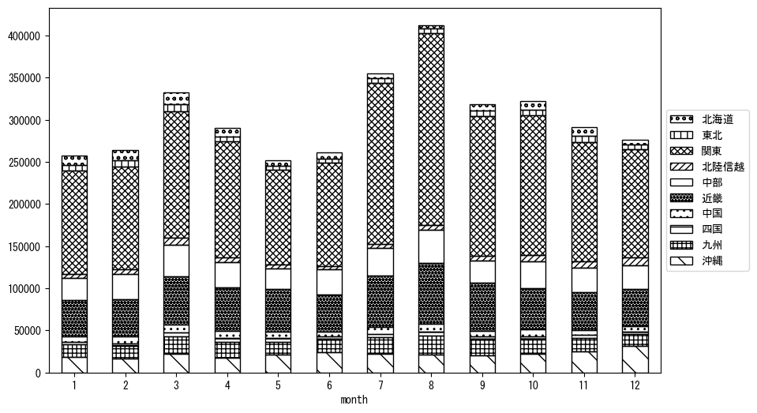
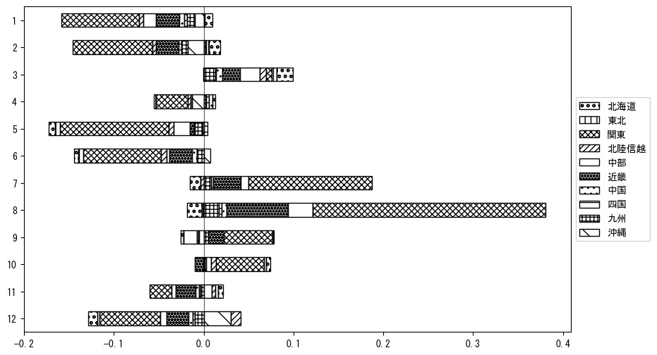

-
トップ
-
沖縄県
沖縄県
１．延べ宿泊者（総数）の推移
時系列グラフ

図１：沖縄県内の従業員数100人以上の宿泊施設での延べ宿泊者数（国外、居住地不詳を含む総数）。
基本統計量
表１：従業員数100人以上の宿泊施設での延べ宿泊者の総数（国外、および居住地不詳を含む）に関する基本統計量。単位は人。平均は１か月あたりの平均値を表す。図１に対応。
| 2008年 |
492,190 |
102,878 |
377,246 (12月) |
710,284 (8月) |
| 2009年 |
391,880 |
66,887 |
310,950 (12月) |
535,267 (8月) |
| 2010年 |
362,545 |
75,124 |
281,734 (12月) |
534,240 (8月) |
| 2011年 |
366,957 |
64,702 |
267,627 (4月) |
500,640 (8月) |
| 2012年 |
361,743 |
63,662 |
280,679 (1月) |
509,872 (8月) |
| 2013年 |
392,571 |
99,304 |
262,080 (11月) |
589,598 (8月) |
| 2014年 |
326,027 |
97,068 |
221,716 (5月) |
524,517 (8月) |
| 2015年 |
366,611 |
55,864 |
289,411 (1月) |
472,869 (8月) |
| 2016年 |
422,753 |
58,353 |
338,636 (12月) |
526,335 (7月) |
| 2017年 |
396,129 |
56,676 |
308,231 (12月) |
486,806 (7月) |
| 2018年 |
396,560 |
61,096 |
280,864 (1月) |
483,642 (8月) |
| 2019年 |
419,483 |
76,657 |
327,445 (9月) |
529,571 (8月) |
| 2020年 |
194,990 |
116,873 |
7,774 (5月) |
346,431 (1月) |
| 2021年 |
183,076 |
65,253 |
96,662 (1月) |
304,032 (12月) |
| 2022年 |
324,941 |
115,200 |
120,886 (2月) |
461,477 (8月) |
| 2023年 |
388,876 |
58,681 |
306,454 (1月) |
514,647 (7月) |
２．宿泊者数の重心（年平均の推移）
図２：沖縄県内の従業員数100人以上の宿泊施設での宿泊者数（国外、居住地不詳を除く）の重心（年平均の推移）。
全画面表示
重心の前年平均からの移動距離と方位、および緯度・経度
表２：重心の前年平均からの移動距離と方位、および緯度・経度。図２に対応。
| 2008年 |
— |
— |
35.1498 |
137.1832 |
| 2009年 |
南西 |
8.4km |
35.0965 |
137.1173 |
| 2010年 |
南西 |
19.0km |
34.9631 |
136.9870 |
| 2011年 |
南南西 |
10.3km |
34.8860 |
136.9246 |
| 2012年 |
南西 |
12.8km |
34.8018 |
136.8292 |
| 2013年 |
北東 |
16.7km |
34.9127 |
136.9531 |
| 2014年 |
南 |
2.5km |
34.8902 |
136.9530 |
| 2015年 |
北 |
1.8km |
34.9063 |
136.9553 |
| 2016年 |
南南西 |
4.5km |
34.8664 |
136.9444 |
| 2017年 |
北東 |
36.3km |
35.1232 |
137.1899 |
| 2018年 |
東北東 |
12.9km |
35.1539 |
137.3266 |
| 2019年 |
南西 |
14.3km |
35.0574 |
137.2219 |
| 2020年 |
南西 |
158.4km |
33.9774 |
136.0931 |
| 2021年 |
東南東 |
5.5km |
33.9527 |
136.1441 |
| 2022年 |
北東 |
85.1km |
34.5319 |
136.7491 |
| 2023年 |
北東 |
65.4km |
34.9763 |
137.2190 |
運輸局別延べ宿泊者数
時系列（年平均）

図３：沖縄県内の従業員数100人以上の宿泊施設での１か月あたり平均宿泊者数（国外、居住地不詳を除く）の運輸局別内訳。
寄与度（前年からの変化率に対する）

図４：沖縄県内の従業員数100人以上の宿泊施設での運輸局別宿泊者数（国外、居住地不詳を除く）から求めた寄与度。
３．宿泊者数の重心（月別）
図５：沖縄県内の従業員数100人以上の宿泊施設での宿泊者数（国外、居住地不詳を除く）の重心（月別）。観測期間は2008年1月から2023年12月まで。
全画面表示
全期間（2008年1月～2023年12月）の平均と月別平均の比較
表３：全期間の平均から月別平均までの移動距離と方位、および緯度・経度。図５に対応。
| 全期間 |
— |
— |
34.8279 |
136.9244 |
| 1月 |
北北東 |
14.1km |
34.9478 |
136.9761 |
| 2月 |
北北東 |
24.8km |
35.0459 |
136.9830 |
| 3月 |
北 |
18.1km |
34.9907 |
136.9332 |
| 4月 |
北 |
10.2km |
34.9200 |
136.9244 |
| 5月 |
南西 |
40.9km |
34.6006 |
136.5725 |
| 6月 |
南西 |
52.3km |
34.4849 |
136.5324 |
| 7月 |
東 |
17.6km |
34.8161 |
137.1168 |
| 8月 |
東 |
31.9km |
34.8765 |
137.2687 |
| 9月 |
東北東 |
15.2km |
34.8630 |
137.0852 |
| 10月 |
北東 |
26.6km |
34.9755 |
137.1538 |
| 11月 |
北北東 |
6.6km |
34.8789 |
136.9607 |
| 12月 |
南西 |
45.0km |
34.5342 |
136.5862 |
運輸局別延べ宿泊者数
月別平均（2008年1月～2023年12月）

図６：沖縄県内の従業員数100人以上の宿泊施設での宿泊者数（国外、居住地不詳を除く）の運輸局別内訳（月別）。
寄与度（全期間の平均から月別平均への変化率に対する）

図７：沖縄県内の従業員数100人以上の宿泊施設での運輸局別宿泊者数（国外、居住地不詳を除く）から求めた寄与度（月別）。
４．データのダウンロード
出典：観光庁「宿泊旅行統計調査」に収録された「施設所在地別、居住地別延べ宿泊者数（従業員数100人以上の施設）」
国土地理院「白地図（地理院タイル）」（図２と図５）